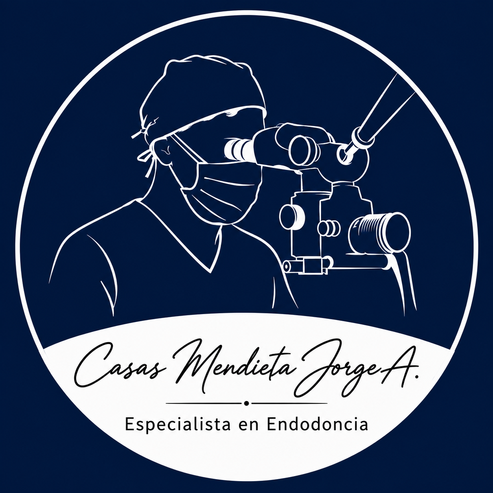
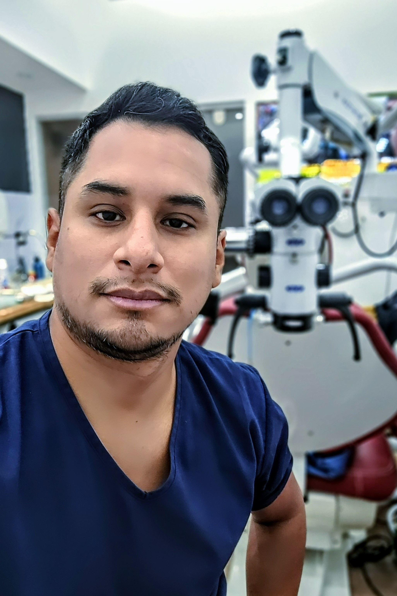
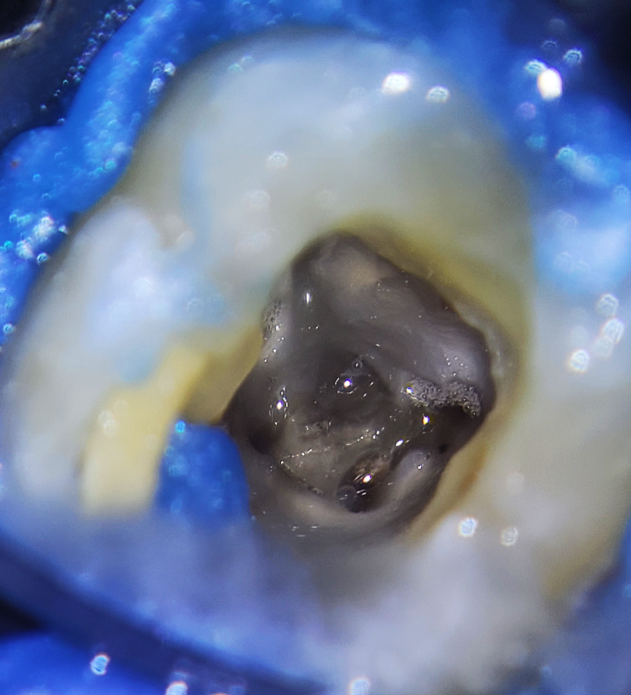
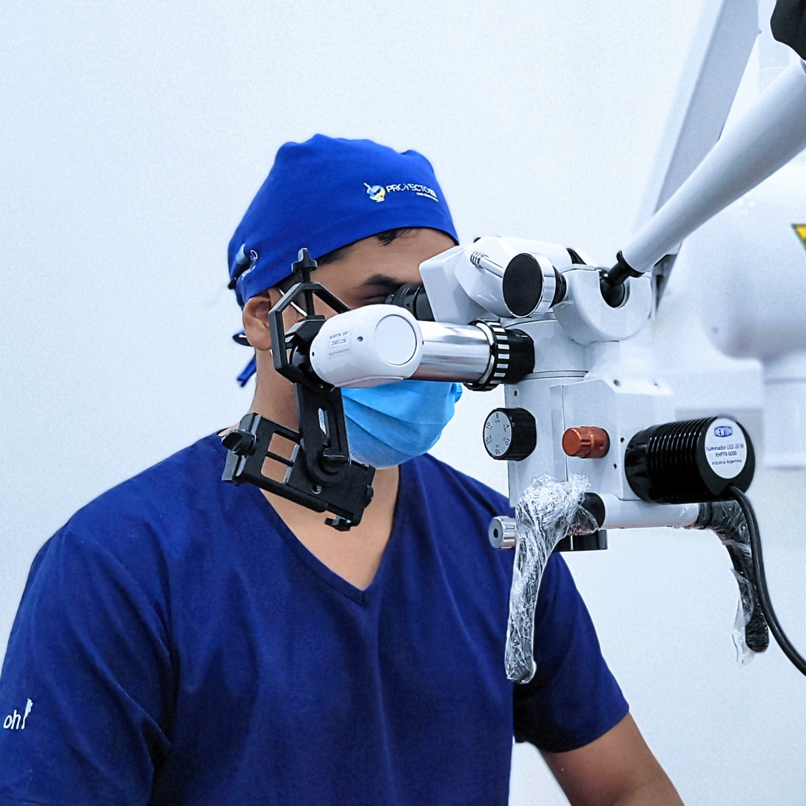
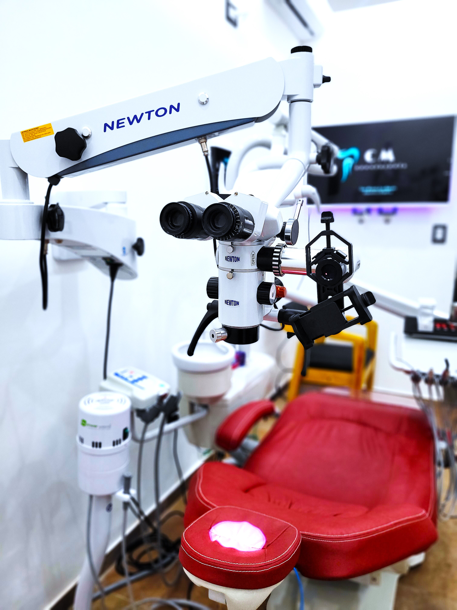

2023 — en curso · UNLP
Maestría en Educación Odontológica
Facultad de Odontología de la Universidad Nacional de La Plata.

Esp. Jorge Alejandro Casas MendietaEspecialista en EndodonciaEndodoncia · La Plata, Buenos Aires
Atención especializada orientada a conservar piezas dentarias, aliviar el dolor y acompañar cada caso con un diagnóstico claro y un tratamiento responsable.
Perfil profesional
Soy odontólogo y especialista en endodoncia, graduado en la Universidad Nacional de La Plata y especialista por la Universidad Maimónides. Mi práctica se centra en el diagnóstico y tratamiento de las patologías que afectan la pulpa dental y los tejidos perirradiculares.
Combino la actividad asistencial con la docencia universitaria y la formación continua. Trabajo en coordinación con colegas derivantes, con comunicación clara sobre cada etapa y seguimiento posterior al tratamiento.
Trayectoria
Facultad de Odontología de la Universidad Nacional de La Plata.
Formación de posgrado realizada en Buenos Aires.
Graduado en la Facultad de Odontología de la Universidad Nacional de La Plata.
Experiencia
Una trayectoria construida entre la atención especializada, la universidad y el sistema público de salud.
Cátedra de Endodoncia “B” y posgrado, Universidad Nacional de La Plata.
Consulta particular especializada en La Plata.
Hospital Interzonal General de Agudos Presidente Perón de Avellaneda.
Cátedra de Endodoncia II, Universidad del Salvador / Asociación Odontológica Argentina.
Servicio de Odontología, HIGA Presidente Perón de Avellaneda.
HIGA Presidente Perón de Avellaneda, Provincia de Buenos Aires.
Dictante de cursos y conferencista en congresos nacionales e internacionales. Coautor de capítulos de libro.
Atención especializada
Evaluación individual de cada caso y planificación basada en criterios clínicos y radiográficos.
Evaluación del dolor de origen dentario y de lesiones asociadas a la pulpa y los tejidos periapicales.
Procedimientos destinados a conservar la pieza dentaria y restablecer su salud.
Resolución de casos que requieren una nueva intervención endodóntica.
Abordaje de cuadros de dolor agudo y traumatismos dentarios, sujeto a disponibilidad.




Para colegas
Recibo pacientes derivados para evaluación y tratamiento endodóntico, manteniendo una comunicación fluida con el profesional derivante y enviando el informe correspondiente.
1 Enviá los datos del caso y los estudios disponibles.
2 Coordinamos la evaluación con el paciente.
3 Recibís el informe y las indicaciones posteriores.
Realizar una derivaciónContacto
Para solicitar un turno o realizar una consulta por derivación, comunicate vía WhatsApp o por el medio que te resulte más cómodo (solo mensaje).